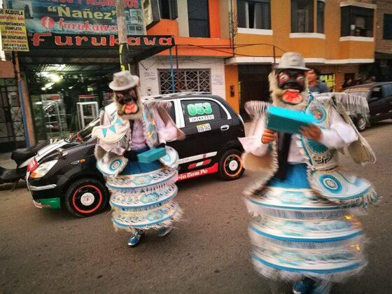
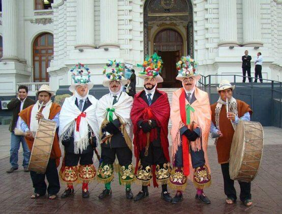
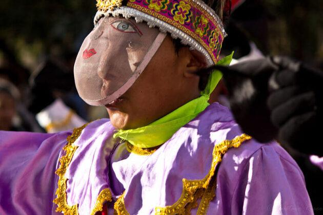
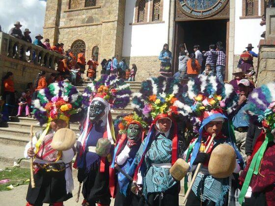
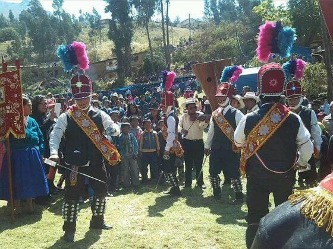
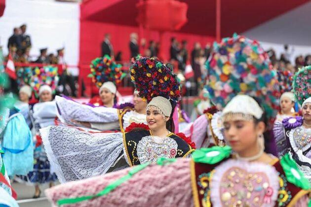

Una de las más generalizadas danzas típicas de Ancash es la wankillas. En el Antiguo Perú, la danza de las wankas (una piedra sagrada) era presentada en ciertos centros ceremoniales.
Actualmente estas se llevan a cabo durante la fiesta de Nuestra Señora de las Mercedes de Carhuaz. Las celebraciones comienzan el 24 de septiembre y terminan el 3 de octubre.
En cuanto a los danzantes, estos realizan el baile en números pares. Su vestimenta es colorida, destacando por llevar unos cascabeles de metal en las polainas que producen un sonido característico.
Los negritos
Descripción

Los orígenes de este baile se remontan a la época colonial, cuando los esclavos negros eran liberados temporalmente cerca de la Navidad.
Estos eran organizados por los sacerdotes para visitar iglesias y demostrar su veneración a Dios a través de canciones y bailes. A cambio, les daban comida y bebida.
Hoy día, esta celebración se realiza en Ancash durante la fiesta de Nuestra Señora de las Mercedes. Los participantes, campesinos quechuas, usan máscaras negras.
La vestimenta para el baile consiste en camisas blancas, pantalones negros y pañuelos rojos en los hombros.
Los bailarines suelen llevar látigos y campanas, y son acompañados por un hombre disfrazado de toro.
Huaridanza
Descripción

Huaridanza es otra de las danzas típicas de Ancash que goza de gran popularidad. Se cree que esta danza llegó a la provincia de Huari desde Pomabamba a principios del siglo XX.
Este sería un acuerdo entre los pobladores de ambas provincias para dar solemnidad a la sus fiestas en honor a su santo patrono San Francisco de Asís.
Con el tiempo adquirió el estilo que la caracteriza en la actualidad. La cuadrilla para este baile está compuesta por seis bailarines: un caporal y los vasallos.
Los shacshas
Descripción

Esta danza es la más importante de la provincia de Huaraz, capital de Ancash. Se lleva a cabo en el marco de la fiesta del Señor de la Soledad, del 3 al 10 de mayo.
El origen de esta veneración data de la era colonial, cuando sustituyó un culto prehispánico. En su coreografía se hace referencia a ciertos animales, algunas actividades económicas y a figuras cósmicas.
Esta danza combina representaciones del mundo mítico andino y expresiones de la fe cristiana.
Los Antihuanquillas
Descripción

Los antihuanquillas se suma a las danzas típicas de Ancash que se practican durante la fiesta de Nuestra Señora de las Mercedes.
Se ejecuta con catorce bailarines, acompañados de arpa y violines. Los participantes visten pequeños ponchos y llevan unas campanillas debajo de los pantalones. También usan un bastón para marcar el ritmo.
Huanquillas de pomabambas
Descripción

Se remonta al Imperio wari (700 – 1200 d. C.), siendo una danza militar ejecutada por los soldados antes de comenzar la batalla. Para darle más majestuosidad y agresividad a la danza bailaban con sus armas (hondas, flechas, arcos, etc.) y así sorprender más al enemigo.
Actualmente esos tintes bélicos han ido desapareciendo, siendo un baile alegre y en el que los jóvenes bailarines muestran sus habilidades con pies y manos mientras visten coloridas prendas.
Normalmente la indumentaria se compone de una camisa blanca, un chaleco de color, pantalón azul y una banda presidencial. A su vez, en la cabeza portan monterillas con flores y espejos.
Danza de las Pallas de Corongo
Descripción

Se baila todos los años coincidiendo con el Día de San Pedro (29 de junio). Declarada desde 2008 como Patrimonio Cultural de la Nación, es una de las danzas más antiguas que se conocen en la región Áncash.
Su origen es incaico y se caracteriza por los vestidos regionales de las bailarinas, compuesto por muchos colores y amplias mangas que se complementan perfectamente con un tocado de flores que llevan en la cabeza.
La danza se baila al ritmo de una flauta y tambor, siendo una melodía muy repetitiva y con tintes indígenas ancestrales.